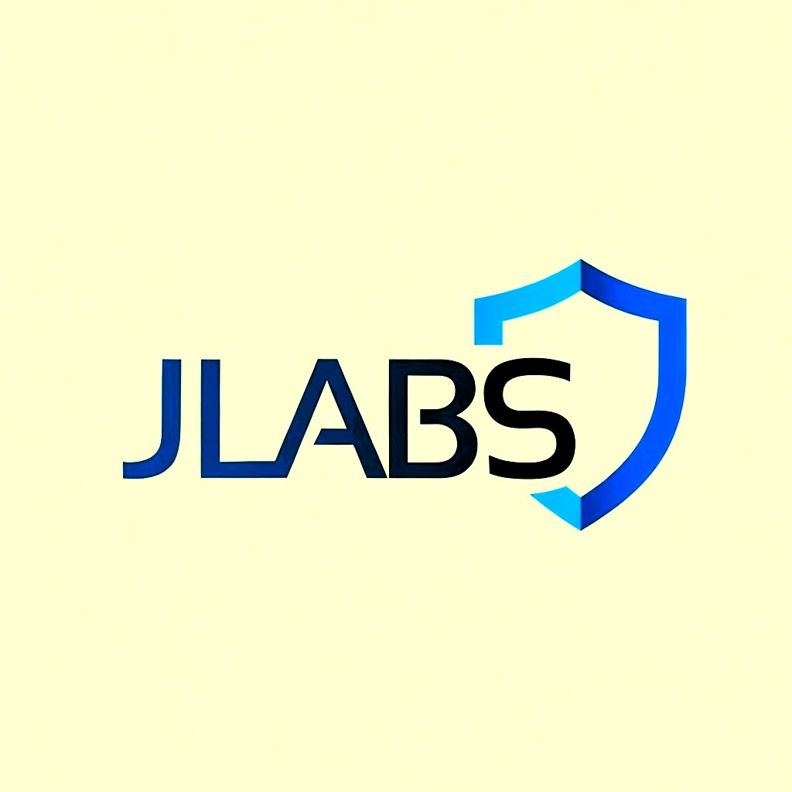

Helping People Build Real Cybersecurity Skills
Entry-level cybersecurity analyst building a strong foundation in threat detection, incident response, and security analysis — while integrating AI into practical workflows and mentoring peers along the way.

Building a strong foundation, one skill at a time.
As an entry-level cybersecurity analyst, I am dedicated to building a strong foundation in threat detection, incident response, and security analysis — core competencies essential for effective cyber defense.
I hold key foundation and intermediate industry certifications in cybersecurity fundamentals, ethical hacking, and defense analysis, and I am actively pursuing advanced credentials to deepen my expertise in digital threat analysis and security operations.
While advancing my technical skills through continuous learning and hands-on experience, I also prioritize knowledge sharing. I currently mentor peers and emerging professionals, guiding them through foundational concepts and real-world scenarios in cybersecurity.
This dual focus — on mastering analyst-specific skills and empowering others — drives my passion for growth, collaboration, and real-world impact in the field. I'm also increasingly drawn to Artificial Intelligence, Generative AI, and Prompt Engineering, and I'm actively exploring how they can be applied to practical security workflows.
I am committed to evolving as a cybersecurity professional focused on business security, risk management, and identity protection — real-world defensive security rather than chasing buzzwords — and I welcome opportunities to contribute to proactive, resilient, and informed security environments.
Threat Detection
Building the fundamentals to spot and understand threats before they escalate.
Incident Response
Practicing structured, level-headed response to real-world security scenarios.
Security Analysis
Sharpening the analyst instincts that turn raw data into real defense.
Knowledge Sharing
Mentoring peers and emerging professionals through foundational concepts.
Skills & Technologies
A practical toolkit built around security operations, defensive fundamentals, and applying AI to real workflows.
AI & Emerging Tech
- Artificial Intelligence (AI)
- Generative AI
- Prompt Engineering
Security Operations
- Cybersecurity Operations (SOC)
- Threat Analysis
- Threat Hunting
- Incident Response
- Security Monitoring
Network & Systems
- Network Security
- TCP/IP, DNS, HTTP, SSH, VPN, Firewalls
- Linux & Windows
Tools & Automation
- SIEM (Splunk)
- Wireshark & Sysmon
- Microsoft Defender
- Python Automation
- Bash & PowerShell
Risk, Identity & Awareness
- Risk Management
- Identity & Access Management
- Security Awareness
Certifications
Verified credentials earned through Cisco and OPSWAT career-path training — each one verifiable on Credly.
Projects
Hands-on labs and tools built to practice, teach, and prove out real detection and response workflows.
Beginner SOC Home Lab
Built a self-contained SOC environment so new analysts can generate, ingest, and triage real telemetry instead of reading about it.
- Cut new-analyst onboarding time by half
- Reused across 3 mentorship cohorts
Threat Detection Lab
Currently mapping attacker techniques to detection rules and continuously tuning them against simulated adversary behavior.
- 18+ detections mapped to MITRE ATT&CK so far
- Actively iterating to reduce false positives
Malware Analysis Sandbox
Building out an isolated environment for safely detonating and analyzing suspicious samples, with automated behavior reporting — currently expanding detection coverage.
- Static + dynamic analysis reporting in progress
- Testing against a growing sample set
Port Detector (CLI Tool)
A lightweight Bash script that checks whether a specific TCP port is open or closed on a given host, run directly from the command line.
- Custom host and port via
-hand-pflags - Defaults to port 8080 on localhost with no arguments
Python Security Automation
Experimenting with scripts that auto-enrich alerts with threat intel context, iterating toward less manual lookup work.
- Currently integrating with intel feeds
- Refining alert-enrichment logic
AI Resume Automation Platform
Currently building a tool that uses AI to help mentees tailor security-focused resumes to specific job descriptions.
- In active development
- Testing with early mentee feedback
My Learning Journey
Click any milestone to see more. Growth here has never been linear — but it has been consistent.
Building the Foundation
Started by developing strong IT fundamentals through self-learning, online resources, volunteering, and hands-on practice — computer architecture, operating systems, networking basics, programming, and how software and systems work together.
Understanding Networks
Completed training in networking fundamentals, networking devices, initial device configuration, endpoint security, and common network protocols — building a deeper understanding of how modern networks operate and how secure communication is established.
Entering Cybersecurity
Earned the Cisco Junior Cybersecurity Analyst Career Path certification — cybersecurity fundamentals, the CIA Triad, risk management, business continuity, security operations, threats and vulnerabilities, and defensive security principles. A solid grounding in today's cybersecurity landscape.
Giving Back
Began mentoring aspiring cybersecurity learners, helping beginners understand IT fundamentals, networking, and cybersecurity concepts — while reinforcing my own knowledge through teaching.
Blue Team & Security Operations
Earned the Cisco Cybersecurity Defense Analyst Career Path certification. Focused heavily on Splunk SIEM and SOC operations — telemetry collection, CIM data normalization, SPL searching and investigation, alert investigation, threat detection, log analysis, security monitoring, and incident investigation.
Understanding the Adversary
Earned the Cisco Ethical Hacker certification — adversarial tactics and techniques, the Cyber Kill Chain, reconnaissance, exploitation methodologies, ethical hacking principles, security testing, and professional ethics and responsible disclosure. A deeper understanding of attacker behavior to sharpen defensive decision-making.
Continuous Growth
Currently focused on building advanced cybersecurity labs, improving telemetry collection and analysis, integrating AI into cybersecurity workflows, and gaining real-world experience through practical projects, research, and continuous learning.
Services
Practical, hands-on help for people building a foundation in IT, cybersecurity, or AI — plus collaboration for teams and fellow builders.
Mentoring & Tutoring
Cybersecurity mentoring for beginner and intermediate learners, plus one-on-one tutoring through fundamentals at your own pace.
Get StartedCareer Guidance
Career guidance for aspiring cybersecurity professionals and learning roadmap planning tailored to where you're starting from.
Get StartedIT & Security Consulting
IT consultation, cybersecurity awareness sessions, and general IT consulting with practical resource recommendations.
Get StartedTechnical Collaboration
Collaboration on cybersecurity and AI projects — labs, automation, and research with fellow builders and teams.
Get StartedFeedback from students has consistently highlighted practical teaching, hands-on demonstrations, and simplified explanations that make complex technical concepts easier to understand — see a few of their notes below.
Testimonials
From students I've mentored at nHub.
Ready to Break Into Cybersecurity?
I offer practical, beginner-friendly cybersecurity mentorship designed to help you build real skills — not just collect certificates. Whether you're starting from scratch or strengthening your foundation, you'll learn through hands-on guidance, real-world labs, and a structured roadmap, at an affordable price.
Let's start your cybersecurity journey today — reach out to book your mentorship session.